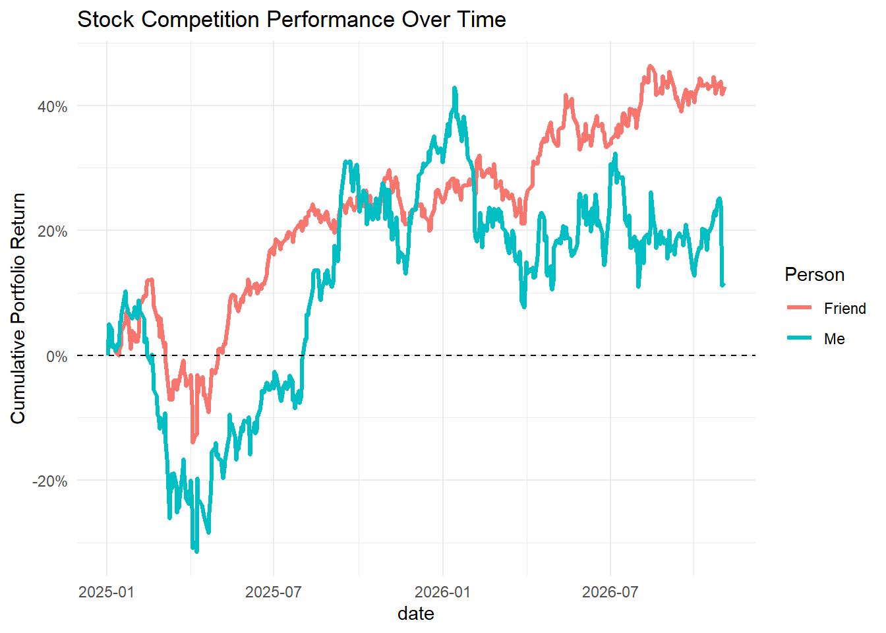
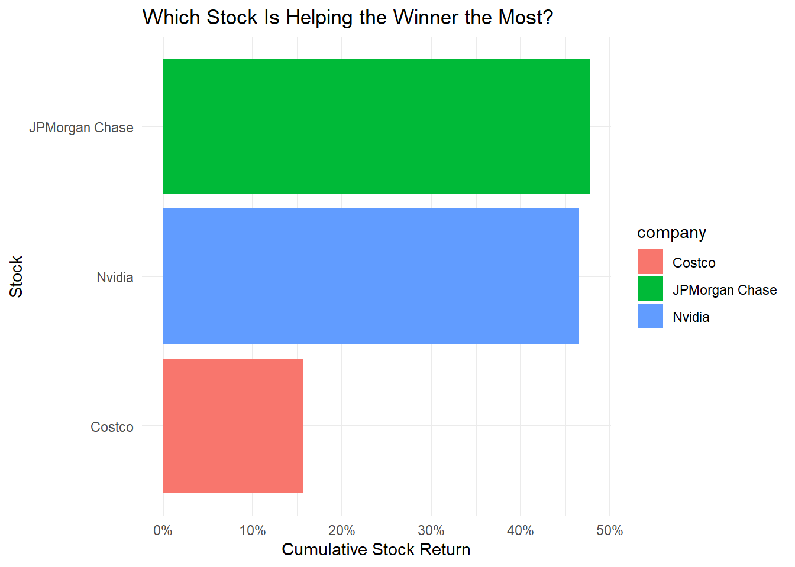
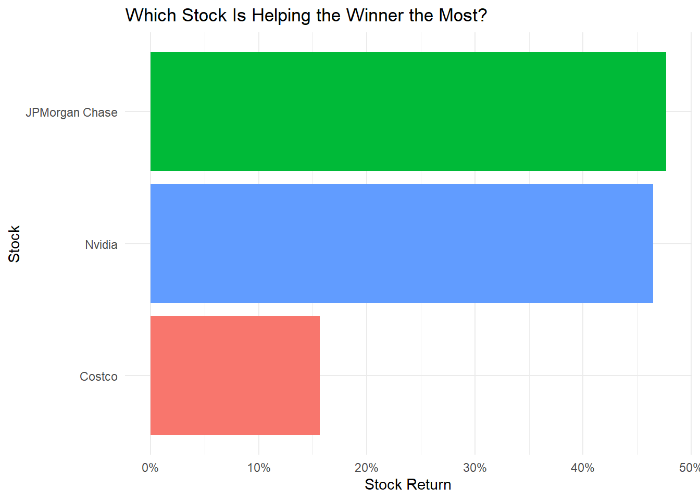

Show the code
library(tidyverse)
library(tidyquant)
library(lubridate)
library(scales)DS 350 · Data Wrangling & Visualization
Spencer Payne
A friend and I each picked three stocks at the start of 2025. Mine were Tesla, Reddit, and Lockheed Martin, and theirs were Nvidia, Costco, and JPMorgan Chase. I pulled daily prices with tidyquant, turned them into equal-weighted daily portfolio returns, and tracked cumulative performance to see who is winning and which stock is carrying each portfolio.
# A tibble: 6 × 3
symbol person company
<chr> <chr> <chr>
1 TSLA Me Tesla
2 RDDT Me Reddit
3 LMT Me Lockheed Martin
4 NVDA Friend Nvidia
5 COST Friend Costco
6 JPM Friend JPMorgan Chase # A tibble: 2,760 × 8
symbol date open high low close volume adjusted
<chr> <date> <dbl> <dbl> <dbl> <dbl> <dbl> <dbl>
1 TSLA 2025-01-02 390. 393. 373. 379. 109710700 379.
2 TSLA 2025-01-03 381. 412. 379. 410. 95423300 410.
3 TSLA 2025-01-06 423. 426. 402. 411. 85516500 411.
4 TSLA 2025-01-07 406. 414. 390 394. 75699500 394.
5 TSLA 2025-01-08 393. 402. 387. 395. 73038800 395.
6 TSLA 2025-01-10 391. 399. 377. 395. 62287300 395.
7 TSLA 2025-01-13 383. 404. 380. 403. 67580500 403.
8 TSLA 2025-01-14 414. 423. 395. 396. 84565000 396.
9 TSLA 2025-01-15 410. 430. 406. 428. 81375500 428.
10 TSLA 2025-01-16 423. 424 409. 414. 68335200 414.
# ℹ 2,750 more rows# A tibble: 2,760 × 5
symbol date daily.returns person company
<chr> <date> <dbl> <chr> <chr>
1 TSLA 2025-01-02 0 Me Tesla
2 TSLA 2025-01-03 0.0822 Me Tesla
3 TSLA 2025-01-06 0.00149 Me Tesla
4 TSLA 2025-01-07 -0.0406 Me Tesla
5 TSLA 2025-01-08 0.00147 Me Tesla
6 TSLA 2025-01-10 -0.000506 Me Tesla
7 TSLA 2025-01-13 0.0217 Me Tesla
8 TSLA 2025-01-14 -0.0172 Me Tesla
9 TSLA 2025-01-15 0.0804 Me Tesla
10 TSLA 2025-01-16 -0.0336 Me Tesla
# ℹ 2,750 more rowsportfolio_returns <- return_data %>%
group_by(person, date) %>%
summarize(daily_portfolio_return = mean(daily.returns, na.rm = TRUE),
.groups = "drop") %>%
group_by(person) %>%
arrange(date) %>%
mutate(wealth_index = cumprod(1 + daily_portfolio_return),
portfolio_return = wealth_index - 1) %>%
ungroup()
portfolio_returns# A tibble: 920 × 5
person date daily_portfolio_return wealth_index portfolio_return
<chr> <date> <dbl> <dbl> <dbl>
1 Friend 2025-01-02 0 1 0
2 Me 2025-01-02 0 1 0
3 Friend 2025-01-03 0.0219 1.02 0.0219
4 Me 2025-01-03 0.0509 1.05 0.0509
5 Friend 2025-01-06 0.0120 1.03 0.0342
6 Me 2025-01-06 -0.00717 1.04 0.0433
7 Friend 2025-01-07 -0.0180 1.02 0.0156
8 Me 2025-01-07 -0.0283 1.01 0.0138
9 Friend 2025-01-08 0.00204 1.02 0.0177
10 Me 2025-01-08 0.00340 1.02 0.0172
# ℹ 910 more rowsggplot(portfolio_returns, aes(x = date, y = portfolio_return, color = person)) +
geom_line(linewidth = 1.2) +
geom_hline(yintercept = 0, linetype = "dashed") +
scale_y_continuous(labels = percent_format()) +
labs(title = "Stock Competition Performance Over Time",
y = "Cumulative Portfolio Return",
color = "Person") +
theme_minimal()
# A tibble: 1 × 5
person date daily_portfolio_return wealth_index portfolio_return
<chr> <date> <dbl> <dbl> <dbl>
1 Friend 2026-11-02 0.00861 1.43 0.430# A tibble: 2,760 × 7
symbol date daily.returns person company stock_growth stock_return
<chr> <date> <dbl> <chr> <chr> <dbl> <dbl>
1 COST 2025-01-02 0 Friend Costco 1 0
2 COST 2025-01-03 0.00744 Friend Costco 1.01 0.00744
3 COST 2025-01-06 0.00669 Friend Costco 1.01 0.0142
4 COST 2025-01-07 -0.00145 Friend Costco 1.01 0.0127
5 COST 2025-01-08 0.00651 Friend Costco 1.02 0.0193
6 COST 2025-01-10 0.0103 Friend Costco 1.03 0.0298
7 COST 2025-01-13 -0.0131 Friend Costco 1.02 0.0164
8 COST 2025-01-14 -0.00808 Friend Costco 1.01 0.00816
9 COST 2025-01-15 0.00684 Friend Costco 1.02 0.0150
10 COST 2025-01-16 -0.00406 Friend Costco 1.01 0.0109
# ℹ 2,750 more rows# A tibble: 3 × 7
symbol date daily.returns person company stock_growth stock_return
<chr> <date> <dbl> <chr> <chr> <dbl> <dbl>
1 JPM 2026-11-02 0.0105 Friend JPMorgan Cha… 1.48 0.477
2 NVDA 2026-11-02 -0.0126 Friend Nvidia 1.46 0.465
3 COST 2026-11-02 0.0279 Friend Costco 1.16 0.156
ggplot(winner_stocks, aes(x = reorder(company, stock_return), y = stock_return, fill = company)) +
geom_col() +
coord_flip() +
scale_y_continuous(labels = percent_format()) +
labs(title = "Which Stock Is Helping the Winner the Most?",
x = "Stock",
y = "Stock Return") +
theme_minimal() +
theme(legend.position = "none")
For this stock competition, I chose Tesla, Reddit, and Lockheed Martin. My friend chose Nvidia, Costco, and JPMorgan Chase. I used tq_get() to get the stock prices and then used tq_transmute() to calculate the daily returns for each stock. After that I used tq_portfolio() to put each person’s three stocks together into one portfolio. Each stock was weighted the same, so every stock counted as one third of the portfolio.
The first graph shows who is winning each day by comparing the portfolio returns over time. This makes it easy to see the competition instead of just looking at the final day. The second graph shows which stock is helping the winner the most. I used the final day of the data and looked at the stocks in the winning portfolio. I used percent return because it makes the stocks easier to compare even though their actual prices are very different.